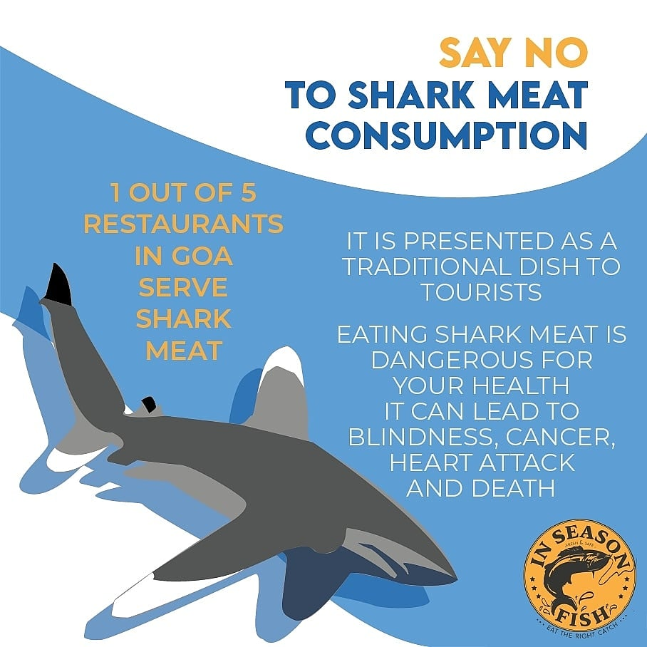
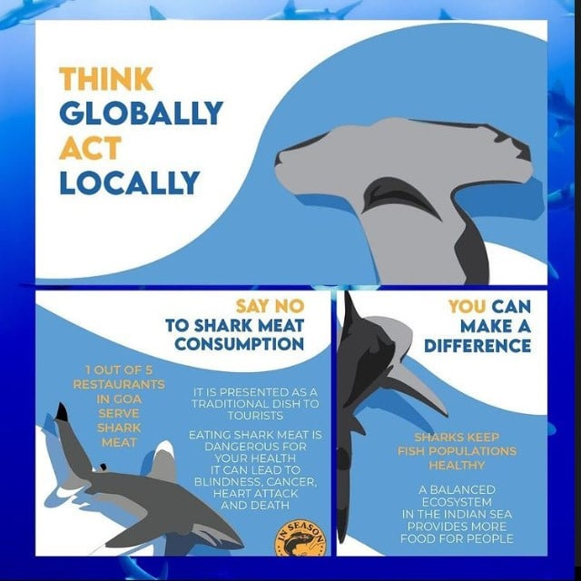
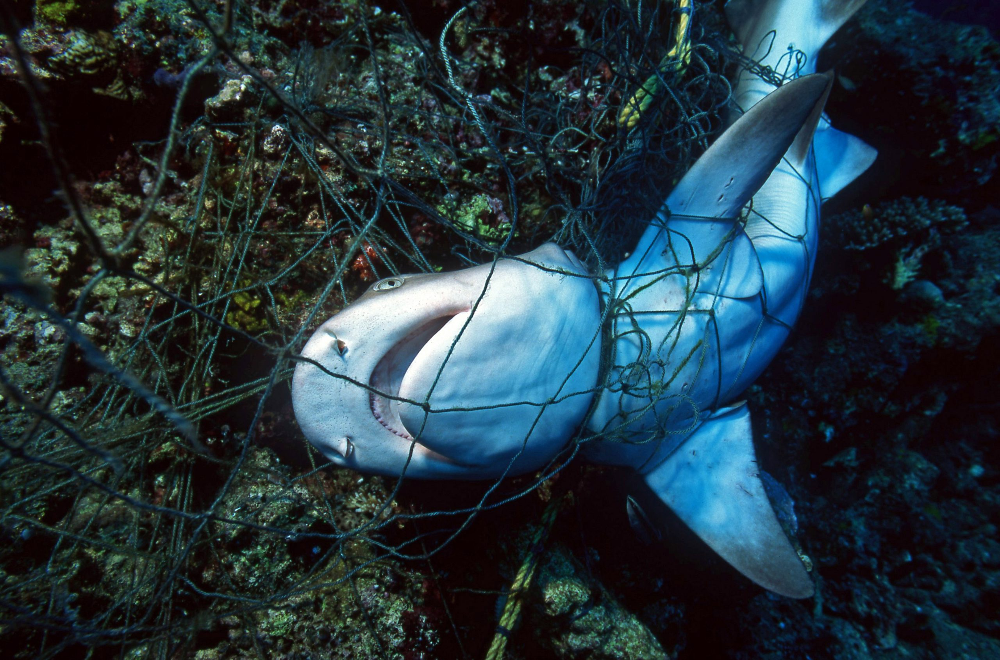

| 🦈 ● Why conservation efforts matter | |
| Humans are killing sharks at an unprecedented rate. An estimated 100 million a year are killed for meat, as byproducts of commercial fishing, pollution, and out of fear.
⇧ Here's a frenly shark being given belly rubs by a diver. | |
| 🦈 ● Do not use shark products | |
| Obviously a great place to start is by not consuming any shark meat. However, there are more products than just shark meat on the market.
 Shark cartilage and oils are found in a range of products from beauty items to health nutrition. So before consuming any product, make sure it does not use any shark materials. | |
| 🦈 ● Reduce, Reuse, Recycle | |
| One of the biggest threats to shark species is trash. With the massive plastic gyres and dumping, sharks often mistake garbage for food. Plastic is also consumed by the marine species that sharks eat.
 That's a tiger shark. Sharks will eventually consume non-food products, leading to illness and death. So think about your impact on marine species when using products, so that they don’t end up causing irreparable damage to sharks species. |